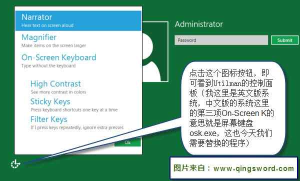
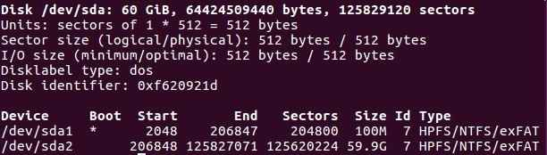
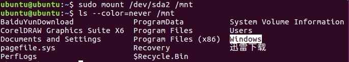
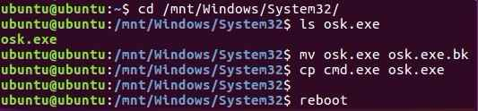
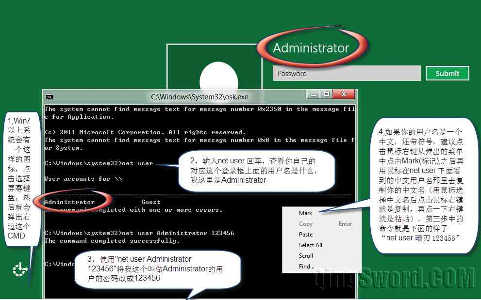
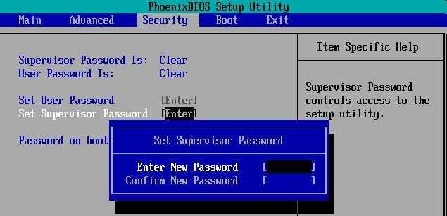

利用Ubuntu启动U盘破解Windows开机密码
引言
这篇文章给大家介绍如何利用Ubuntu启动U盘（或光盘）巧妙破解windows开机密码。如果你不小心忘记了密码但又不想重装系统，那么这个方法能让你在不重装的前提下重置密码。
此方法适用于WindowsXP/7/8/10，在往后的版本中，只要windows登陆界面的“轻松访问”（Utilman）功能不被取消，就能使用这个破解方法。
文章目录
0×1.windows开机密码破解思路
在WindowsXP以后的操作系统中，启动界面加入了一项叫做"轻松访问"（Utilman）的功能，这项功能的主要目的，是帮助一些视力、听力不太好，或者不能用键盘输入的用户完成一些操作。
这个叫做"轻松访问"的功能能够在输入密码前被执行，这就给我们提供了一个思路，如果我们替换"轻松访问"中的某项功能，那么就能实现在输入密码前执行替换过后的某个程序，即可达到破解密码的目的。
下面为WIN8的启动界面（Win7同样有这个图标，只是弹出来的界面不一样，但是同样能看到"屏幕键盘"，XP需要按键盘上的"Win键+U"即可打开轻松访问。注意：精简版的系统可能将这个功能删除，这时候可以将cmd.exe复制成Utilman.exe，只要在开机界面调用“轻松访问”功能即可打开cmd，之所以替换屏幕键盘osk.exe，是因为这样更加隐蔽。）
0×2.windows开机密码破解实例
1） 准备一张Ubuntu启动U盘（不一定要Ubuntu的系统，任何可以读取计算机系统盘的系统或者PE都可以），U盘启动盘制作方法请参考：Linux环境怎样制作u盘系统启动盘； 利用U盘引导，进入U盘系统。
2）找到或挂载Windows系统所在分区，进入分区，将Windows/system32/osk.exe替换成cmd.exe文件，本例使用Ubuntu，进入U盘系统后，打开终端（Ctrl+Alt+t）请看下面的示例：
#查看硬盘分区列表 qing@qingsword.com:~$ sudo fdisk -l
这一步的判断取决于你对硬盘分区的了解，一般安装系统时使用Windows自带的分区界面分区，就会产生一个100M的boot分区，也就是下图中的/dev/sda1，看到这个分区代表Windows可能就安装在/dev/sda2中；如果是使用PE分区后再安装系统，可能就没有这个分区，如果有多块硬盘，那就将每块硬盘的第一个分区分别挂载上来查看一下有没有windows文件夹即可；
另外，Windows分区Type大多数为NTFS/FAT32，如果在这一步看到了后面的Type是ext4之类的，那肯定不是Windows分区，是Linux类系统的分区格式；
通过上面的分析，尝试着将boot下面的/dev/sda2分区挂载到/mnt查看其内容，看到了Windows熟悉的目录结构；
进入Windows/System32文件夹（注意目录名称大小写），将其中的osk.exe使用cmd.exe替换，然后重启计算机；
3）现在不需要这个U盘了，可以拔掉它，重启来到Windows的登陆界面，使用快捷键"Win键+u"，或点击"轻松访问"->启动"屏幕键盘"，看看发生了什么？
到这里更改密码就完成了，只需要用更改后的密码123456登录这个账户即可。
最后需要注意的是，你进入系统之后，最好将系统盘下的"\Windows\System32\osk.exe"更改回去，前面做了一个备份文件叫osk.exe.bk，将这个伪装的osk.exe删除，将osk.exe.bk重新命名成osk.exe，这样一切又恢复了正常；
0×3.如何防范利用u盘或光盘破解windows开机密码
比较推荐的方法就是，给BIOS加密，这样别人要进入BIOS设置界面需要先输入密码，不然就无法更改系统启动顺序设置U盘或者光盘启动，虽然可以通过给BIOS放电来破解bios密码，但毕竟需要拆机，会麻烦很多。
前面提到的删除系统"轻松访问"程序的做法不能完全防止这种破解，因为可以将cmd复制成Utilman.exe，这样只需要在开机界面调用“轻松访问”功能，即可打开cmd。